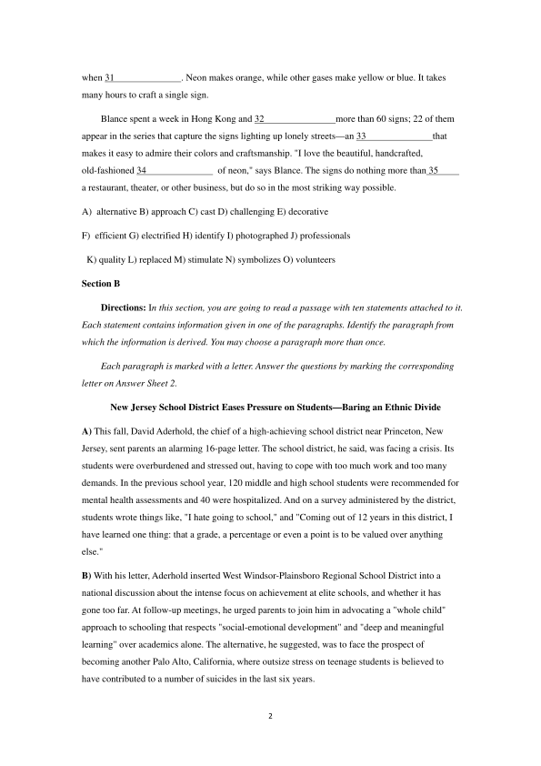
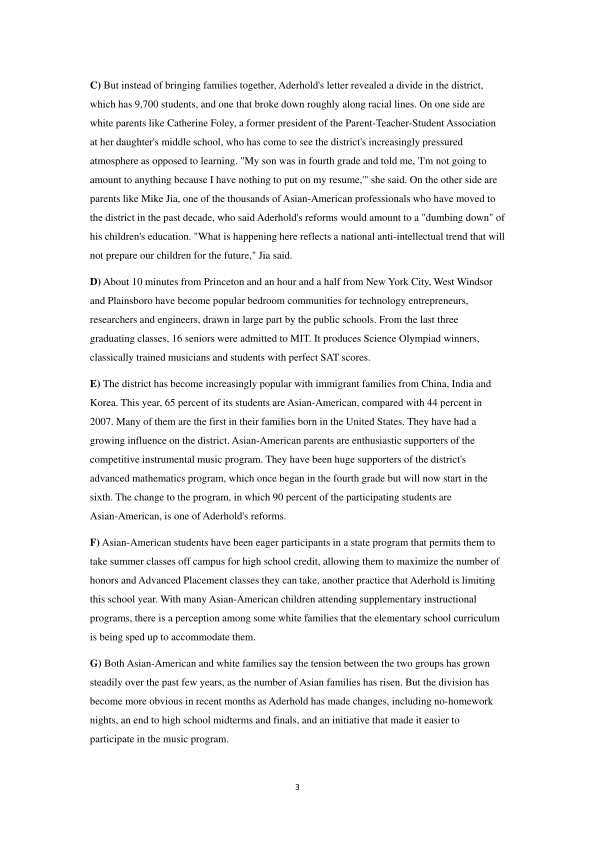
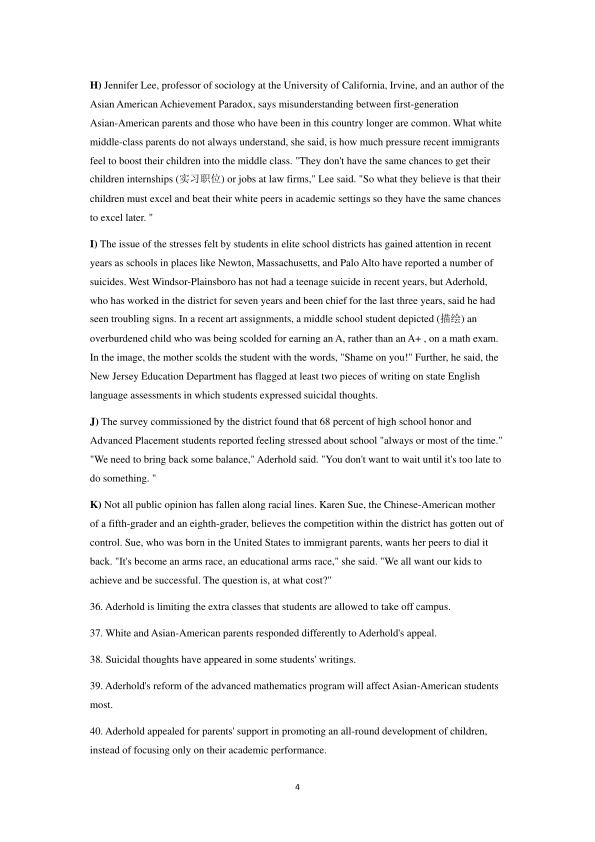
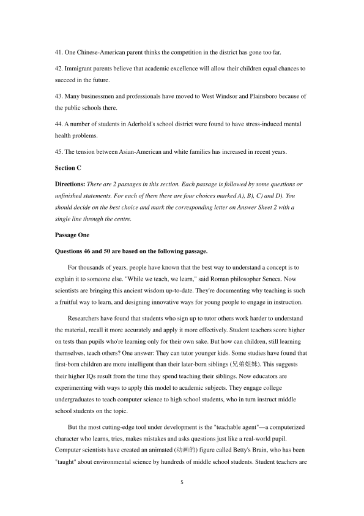
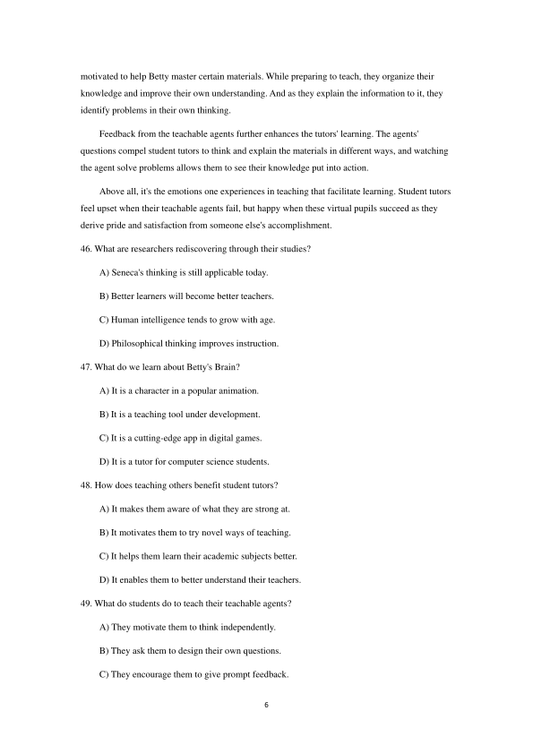
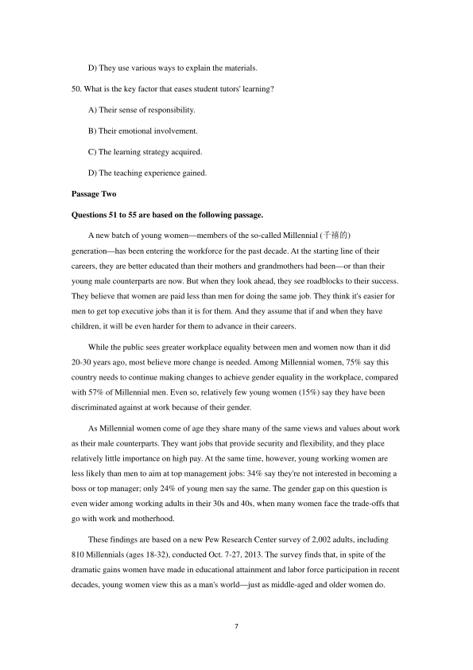
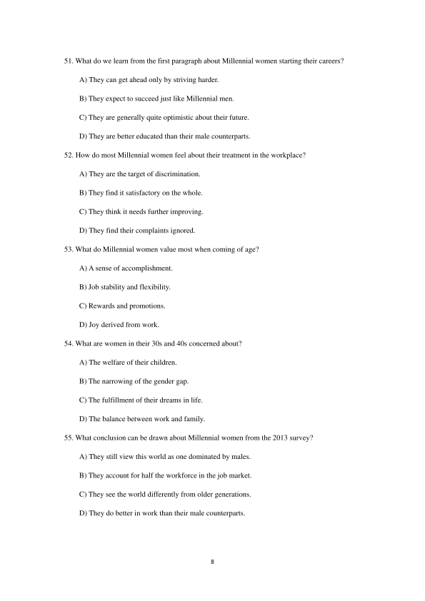

第 1 / 9 页

1
2018 年6 月大学英语四级真题（第3 套)
Part I
Writing
（30 minutes）
Directions: For this part, you are allowed 30minutes to write a short essay on the importance
of speaking ability and how to develop it. You should write at least 120 words but no more tha
n180 words.
________________________________________________________________________
________________________________________________________________________
________________________________________________________________________
Part II
Listening Comprehension
(25 minutes)
说明：由于2018 年6 月四级考试全国共考了两套听力, 本套真
题听力与前两套内容相同, 只是选项顺序不同, 因此在本套真题中
不再重复出现。
Part Ⅲ
Reading Comprehension
(40 minutes)
Section A
Directions: In this section, there is a passage with ten blanks. You are required to select one word
for each blank from a list of choices given in a word bank following the passage. Read the passage
through carefully before making your choices. Each choice in the bank is identified by a letter.
Please mark the corresponding letter for each item on Answer Sheet 2 with a single line through
the centre. You may not use any of the words in the bank more than once.
Neon (霓虹) is to Hong Kong as red phone booths are to London and fog is to San Francisco.
When night falls, red and blue and other colors 26
a hazy (雾蒙蒙的) glow over a city lit
up by tens of thousands of neon signs. But many of them are going dark, 27
by more
practical, but less romantic, LEDs (发光二极管).
Changing building codes, evolving tastes, and the high cost of maintaining those wonderful
old signs have businesses embracing LEDs, which are energy 28
, but still carry
great cost. "To me, neon represents memories of the past," says photographer Sharon Blance,
whose series Hong Kong Neon celebrates the city's famous signs. "Looking at the signs now I get
a feeling of amazement, mixed with sadness."
Building a neon sign is an art practiced by 29
trained on the job to mold
glass tubes into 30
shapes and letters. They fill these tubes with gases that glow
查看 / 复制本页文字
1 2018 年6 月大学英语四级真题（第3 套) Part I Writing （30 minutes） Directions: For this part, you are allowed 30minutes to write a short essay on the importance of speaking ability and how to develop it. You should write at least 120 words but no more tha n180 words. ________________________________________________________________________ ________________________________________________________________________ ________________________________________________________________________ Part II Listening Comprehension (25 minutes) 说明：由于2018 年6 月四级考试全国共考了两套听力, 本套真 题听力与前两套内容相同, 只是选项顺序不同, 因此在本套真题中 不再重复出现。 Part Ⅲ Reading Comprehension (40 minutes) Section A Directions: In this section, there is a passage with ten blanks. You are required to select one word for each blank from a list of choices given in a word bank following the passage. Read the passage through carefully before making your choices. Each choice in the bank is identified by a letter. Please mark the corresponding letter for each item on Answer Sheet 2 with a single line through the centre. You may not use any of the words in the bank more than once. Neon (霓虹) is to Hong Kong as red phone booths are to London and fog is to San Francisco. When night falls, red and blue and other colors 26 a hazy (雾蒙蒙的) glow over a city lit up by tens of thousands of neon signs. But many of them are going dark, 27 by more practical, but less romantic, LEDs (发光二极管). Changing building codes, evolving tastes, and the high cost of maintaining those wonderful old signs have businesses embracing LEDs, which are energy 28 , but still carry great cost. "To me, neon represents memories of the past," says photographer Sharon Blance, whose series Hong Kong Neon celebrates the city's famous signs. "Looking at the signs now I get a feeling of amazement, mixed with sadness." Building a neon sign is an art practiced by 29 trained on the job to mold glass tubes into 30 shapes and letters. They fill these tubes with gases that glow
第 2 / 9 页

2
when 31
. Neon makes orange, while other gases make yellow or blue. It takes
many hours to craft a single sign.
Blance spent a week in Hong Kong and 32
more than 60 signs; 22 of them
appear in the series that capture the signs lighting up lonely streets—an 33
that
makes it easy to admire their colors and craftsmanship. "I love the beautiful, handcrafted,
old-fashioned 34
of neon," says Blance. The signs do nothing more than 35
a restaurant, theater, or other business, but do so in the most striking way possible.
A) alternative B) approach C) cast D) challenging E) decorative
F) efficient G) electrified H) identify I) photographed J) professionals
K) quality L) replaced M) stimulate N) symbolizes O) volunteers
Section B
Directions: In this section, you are going to read a passage with ten statements attached to it.
Each statement contains information given in one of the paragraphs. Identify the paragraph from
which the information is derived. You may choose a paragraph more than once.
Each paragraph is marked with a letter. Answer the questions by marking the corresponding
letter on Answer Sheet 2.
New Jersey School District Eases Pressure on Students—Baring an Ethnic Divide
A) This fall, David Aderhold, the chief of a high-achieving school district near Princeton, New
Jersey, sent parents an alarming 16-page letter. The school district, he said, was facing a crisis. Its
students were overburdened and stressed out, having to cope with too much work and too many
demands. In the previous school year, 120 middle and high school students were recommended for
mental health assessments and 40 were hospitalized. And on a survey administered by the district,
students wrote things like, "I hate going to school," and "Coming out of 12 years in this district, I
have learned one thing: that a grade, a percentage or even a point is to be valued over anything
else."
B) With his letter, Aderhold inserted West Windsor-Plainsboro Regional School District into a
national discussion about the intense focus on achievement at elite schools, and whether it has
gone too far. At follow-up meetings, he urged parents to join him in advocating a "whole child"
approach to schooling that respects "social-emotional development" and "deep and meaningful
learning" over academics alone. The alternative, he suggested, was to face the prospect of
becoming another Palo Alto, California, where outsize stress on teenage students is believed to
have contributed to a number of suicides in the last six years.
查看 / 复制本页文字
2 when 31 . Neon makes orange, while other gases make yellow or blue. It takes many hours to craft a single sign. Blance spent a week in Hong Kong and 32 more than 60 signs; 22 of them appear in the series that capture the signs lighting up lonely streets—an 33 that makes it easy to admire their colors and craftsmanship. "I love the beautiful, handcrafted, old-fashioned 34 of neon," says Blance. The signs do nothing more than 35 a restaurant, theater, or other business, but do so in the most striking way possible. A) alternative B) approach C) cast D) challenging E) decorative F) efficient G) electrified H) identify I) photographed J) professionals K) quality L) replaced M) stimulate N) symbolizes O) volunteers Section B Directions: In this section, you are going to read a passage with ten statements attached to it. Each statement contains information given in one of the paragraphs. Identify the paragraph from which the information is derived. You may choose a paragraph more than once. Each paragraph is marked with a letter. Answer the questions by marking the corresponding letter on Answer Sheet 2. New Jersey School District Eases Pressure on Students—Baring an Ethnic Divide A) This fall, David Aderhold, the chief of a high-achieving school district near Princeton, New Jersey, sent parents an alarming 16-page letter. The school district, he said, was facing a crisis. Its students were overburdened and stressed out, having to cope with too much work and too many demands. In the previous school year, 120 middle and high school students were recommended for mental health assessments and 40 were hospitalized. And on a survey administered by the district, students wrote things like, "I hate going to school," and "Coming out of 12 years in this district, I have learned one thing: that a grade, a percentage or even a point is to be valued over anything else." B) With his letter, Aderhold inserted West Windsor-Plainsboro Regional School District into a national discussion about the intense focus on achievement at elite schools, and whether it has gone too far. At follow-up meetings, he urged parents to join him in advocating a "whole child" approach to schooling that respects "social-emotional development" and "deep and meaningful learning" over academics alone. The alternative, he suggested, was to face the prospect of becoming another Palo Alto, California, where outsize stress on teenage students is believed to have contributed to a number of suicides in the last six years.
第 3 / 9 页

3
C) But instead of bringing families together, Aderhold's letter revealed a divide in the district,
which has 9,700 students, and one that broke down roughly along racial lines. On one side are
white parents like Catherine Foley, a former president of the Parent-Teacher-Student Association
at her daughter's middle school, who has come to see the district's increasingly pressured
atmosphere as opposed to learning. "My son was in fourth grade and told me, 'I'm not going to
amount to anything because I have nothing to put on my resume,'" she said. On the other side are
parents like Mike Jia, one of the thousands of Asian-American professionals who have moved to
the district in the past decade, who said Aderhold's reforms would amount to a "dumbing down" of
his children's education. "What is happening here reflects a national anti-intellectual trend that will
not prepare our children for the future," Jia said.
D) About 10 minutes from Princeton and an hour and a half from New York City, West Windsor
and Plainsboro have become popular bedroom communities for technology entrepreneurs,
researchers and engineers, drawn in large part by the public schools. From the last three
graduating classes, 16 seniors were admitted to MIT. It produces Science Olympiad winners,
classically trained musicians and students with perfect SAT scores.
E) The district has become increasingly popular with immigrant families from China, India and
Korea. This year, 65 percent of its students are Asian-American, compared with 44 percent in
2007. Many of them are the first in their families born in the United States. They have had a
growing influence on the district. Asian-American parents are enthusiastic supporters of the
competitive instrumental music program. They have been huge supporters of the district's
advanced mathematics program, which once began in the fourth grade but will now start in the
sixth. The change to the program, in which 90 percent of the participating students are
Asian-American, is one of Aderhold's reforms.
F) Asian-American students have been eager participants in a state program that permits them to
take summer classes off campus for high school credit, allowing them to maximize the number of
honors and Advanced Placement classes they can take, another practice that Aderhold is limiting
this school year. With many Asian-American children attending supplementary instructional
programs, there is a perception among some white families that the elementary school curriculum
is being sped up to accommodate them.
G) Both Asian-American and white families say the tension between the two groups has grown
steadily over the past few years, as the number of Asian families has risen. But the division has
become more obvious in recent months as Aderhold has made changes, including no-homework
nights, an end to high school midterms and finals, and an initiative that made it easier to
participate in the music program.
查看 / 复制本页文字
3 C) But instead of bringing families together, Aderhold's letter revealed a divide in the district, which has 9,700 students, and one that broke down roughly along racial lines. On one side are white parents like Catherine Foley, a former president of the Parent-Teacher-Student Association at her daughter's middle school, who has come to see the district's increasingly pressured atmosphere as opposed to learning. "My son was in fourth grade and told me, 'I'm not going to amount to anything because I have nothing to put on my resume,'" she said. On the other side are parents like Mike Jia, one of the thousands of Asian-American professionals who have moved to the district in the past decade, who said Aderhold's reforms would amount to a "dumbing down" of his children's education. "What is happening here reflects a national anti-intellectual trend that will not prepare our children for the future," Jia said. D) About 10 minutes from Princeton and an hour and a half from New York City, West Windsor and Plainsboro have become popular bedroom communities for technology entrepreneurs, researchers and engineers, drawn in large part by the public schools. From the last three graduating classes, 16 seniors were admitted to MIT. It produces Science Olympiad winners, classically trained musicians and students with perfect SAT scores. E) The district has become increasingly popular with immigrant families from China, India and Korea. This year, 65 percent of its students are Asian-American, compared with 44 percent in 2007. Many of them are the first in their families born in the United States. They have had a growing influence on the district. Asian-American parents are enthusiastic supporters of the competitive instrumental music program. They have been huge supporters of the district's advanced mathematics program, which once began in the fourth grade but will now start in the sixth. The change to the program, in which 90 percent of the participating students are Asian-American, is one of Aderhold's reforms. F) Asian-American students have been eager participants in a state program that permits them to take summer classes off campus for high school credit, allowing them to maximize the number of honors and Advanced Placement classes they can take, another practice that Aderhold is limiting this school year. With many Asian-American children attending supplementary instructional programs, there is a perception among some white families that the elementary school curriculum is being sped up to accommodate them. G) Both Asian-American and white families say the tension between the two groups has grown steadily over the past few years, as the number of Asian families has risen. But the division has become more obvious in recent months as Aderhold has made changes, including no-homework nights, an end to high school midterms and finals, and an initiative that made it easier to participate in the music program.
第 4 / 9 页

4
H) Jennifer Lee, professor of sociology at the University of California, Irvine, and an author of the
Asian American Achievement Paradox, says misunderstanding between first-generation
Asian-American parents and those who have been in this country longer are common. What white
middle-class parents do not always understand, she said, is how much pressure recent immigrants
feel to boost their children into the middle class. "They don't have the same chances to get their
children internships (实习职位) or jobs at law firms," Lee said. "So what they believe is that their
children must excel and beat their white peers in academic settings so they have the same chances
to excel later. "
I) The issue of the stresses felt by students in elite school districts has gained attention in recent
years as schools in places like Newton, Massachusetts, and Palo Alto have reported a number of
suicides. West Windsor-Plainsboro has not had a teenage suicide in recent years, but Aderhold,
who has worked in the district for seven years and been chief for the last three years, said he had
seen troubling signs. In a recent art assignments, a middle school student depicted (描绘) an
overburdened child who was being scolded for earning an A, rather than an A+ , on a math exam.
In the image, the mother scolds the student with the words, "Shame on you!" Further, he said, the
New Jersey Education Department has flagged at least two pieces of writing on state English
language assessments in which students expressed suicidal thoughts.
J) The survey commissioned by the district found that 68 percent of high school honor and
Advanced Placement students reported feeling stressed about school "always or most of the time."
"We need to bring back some balance," Aderhold said. "You don't want to wait until it's too late to
do something. "
K) Not all public opinion has fallen along racial lines. Karen Sue, the Chinese-American mother
of a fifth-grader and an eighth-grader, believes the competition within the district has gotten out of
control. Sue, who was born in the United States to immigrant parents, wants her peers to dial it
back. "It's become an arms race, an educational arms race," she said. "We all want our kids to
achieve and be successful. The question is, at what cost?"
36. Aderhold is limiting the extra classes that students are allowed to take off campus.
37. White and Asian-American parents responded differently to Aderhold's appeal.
38. Suicidal thoughts have appeared in some students' writings.
39. Aderhold's reform of the advanced mathematics program will affect Asian-American students
most.
40. Aderhold appealed for parents' support in promoting an all-round development of children,
instead of focusing only on their academic performance.
查看 / 复制本页文字
4 H) Jennifer Lee, professor of sociology at the University of California, Irvine, and an author of the Asian American Achievement Paradox, says misunderstanding between first-generation Asian-American parents and those who have been in this country longer are common. What white middle-class parents do not always understand, she said, is how much pressure recent immigrants feel to boost their children into the middle class. "They don't have the same chances to get their children internships (实习职位) or jobs at law firms," Lee said. "So what they believe is that their children must excel and beat their white peers in academic settings so they have the same chances to excel later. " I) The issue of the stresses felt by students in elite school districts has gained attention in recent years as schools in places like Newton, Massachusetts, and Palo Alto have reported a number of suicides. West Windsor-Plainsboro has not had a teenage suicide in recent years, but Aderhold, who has worked in the district for seven years and been chief for the last three years, said he had seen troubling signs. In a recent art assignments, a middle school student depicted (描绘) an overburdened child who was being scolded for earning an A, rather than an A+ , on a math exam. In the image, the mother scolds the student with the words, "Shame on you!" Further, he said, the New Jersey Education Department has flagged at least two pieces of writing on state English language assessments in which students expressed suicidal thoughts. J) The survey commissioned by the district found that 68 percent of high school honor and Advanced Placement students reported feeling stressed about school "always or most of the time." "We need to bring back some balance," Aderhold said. "You don't want to wait until it's too late to do something. " K) Not all public opinion has fallen along racial lines. Karen Sue, the Chinese-American mother of a fifth-grader and an eighth-grader, believes the competition within the district has gotten out of control. Sue, who was born in the United States to immigrant parents, wants her peers to dial it back. "It's become an arms race, an educational arms race," she said. "We all want our kids to achieve and be successful. The question is, at what cost?" 36. Aderhold is limiting the extra classes that students are allowed to take off campus. 37. White and Asian-American parents responded differently to Aderhold's appeal. 38. Suicidal thoughts have appeared in some students' writings. 39. Aderhold's reform of the advanced mathematics program will affect Asian-American students most. 40. Aderhold appealed for parents' support in promoting an all-round development of children, instead of focusing only on their academic performance.
第 5 / 9 页

5
41. One Chinese-American parent thinks the competition in the district has gone too far.
42. Immigrant parents believe that academic excellence will allow their children equal chances to
succeed in the future.
43. Many businessmen and professionals have moved to West Windsor and Plainsboro because of
the public schools there.
44. A number of students in Aderhold's school district were found to have stress-induced mental
health problems.
45. The tension between Asian-American and white families has increased in recent years.
Section C
Directions: There are 2 passages in this section. Each passage is followed by some questions or
unfinished statements. For each of them there are four choices marked A), B), C) and D). You
should decide on the best choice and mark the corresponding letter on Answer Sheet 2 with a
single line through the centre.
Passage One
Questions 46 and 50 are based on the following passage.
For thousands of years, people have known that the best way to understand a concept is to
explain it to someone else. "While we teach, we learn," said Roman philosopher Seneca. Now
scientists are bringing this ancient wisdom up-to-date. They're documenting why teaching is such
a fruitful way to learn, and designing innovative ways for young people to engage in instruction.
Researchers have found that students who sign up to tutor others work harder to understand
the material, recall it more accurately and apply it more effectively. Student teachers score higher
on tests than pupils who're learning only for their own sake. But how can children, still learning
themselves, teach others? One answer: They can tutor younger kids. Some studies have found that
first-born children are more intelligent than their later-born siblings (兄弟姐妹). This suggests
their higher IQs result from the time they spend teaching their siblings. Now educators are
experimenting with ways to apply this model to academic subjects. They engage college
undergraduates to teach computer science to high school students, who in turn instruct middle
school students on the topic.
But the most cutting-edge tool under development is the "teachable agent"—a computerized
character who learns, tries, makes mistakes and asks questions just like a real-world pupil.
Computer scientists have created an animated (动画的) figure called Betty's Brain, who has been
"taught" about environmental science by hundreds of middle school students. Student teachers are
查看 / 复制本页文字
5 41. One Chinese-American parent thinks the competition in the district has gone too far. 42. Immigrant parents believe that academic excellence will allow their children equal chances to succeed in the future. 43. Many businessmen and professionals have moved to West Windsor and Plainsboro because of the public schools there. 44. A number of students in Aderhold's school district were found to have stress-induced mental health problems. 45. The tension between Asian-American and white families has increased in recent years. Section C Directions: There are 2 passages in this section. Each passage is followed by some questions or unfinished statements. For each of them there are four choices marked A), B), C) and D). You should decide on the best choice and mark the corresponding letter on Answer Sheet 2 with a single line through the centre. Passage One Questions 46 and 50 are based on the following passage. For thousands of years, people have known that the best way to understand a concept is to explain it to someone else. "While we teach, we learn," said Roman philosopher Seneca. Now scientists are bringing this ancient wisdom up-to-date. They're documenting why teaching is such a fruitful way to learn, and designing innovative ways for young people to engage in instruction. Researchers have found that students who sign up to tutor others work harder to understand the material, recall it more accurately and apply it more effectively. Student teachers score higher on tests than pupils who're learning only for their own sake. But how can children, still learning themselves, teach others? One answer: They can tutor younger kids. Some studies have found that first-born children are more intelligent than their later-born siblings (兄弟姐妹). This suggests their higher IQs result from the time they spend teaching their siblings. Now educators are experimenting with ways to apply this model to academic subjects. They engage college undergraduates to teach computer science to high school students, who in turn instruct middle school students on the topic. But the most cutting-edge tool under development is the "teachable agent"—a computerized character who learns, tries, makes mistakes and asks questions just like a real-world pupil. Computer scientists have created an animated (动画的) figure called Betty's Brain, who has been "taught" about environmental science by hundreds of middle school students. Student teachers are
第 6 / 9 页

6
motivated to help Betty master certain materials. While preparing to teach, they organize their
knowledge and improve their own understanding. And as they explain the information to it, they
identify problems in their own thinking.
Feedback from the teachable agents further enhances the tutors' learning. The agents'
questions compel student tutors to think and explain the materials in different ways, and watching
the agent solve problems allows them to see their knowledge put into action.
Above all, it's the emotions one experiences in teaching that facilitate learning. Student tutors
feel upset when their teachable agents fail, but happy when these virtual pupils succeed as they
derive pride and satisfaction from someone else's accomplishment.
46. What are researchers rediscovering through their studies?
A) Seneca's thinking is still applicable today.
B) Better learners will become better teachers.
C) Human intelligence tends to grow with age.
D) Philosophical thinking improves instruction.
47. What do we learn about Betty's Brain?
A) It is a character in a popular animation.
B) It is a teaching tool under development.
C) It is a cutting-edge app in digital games.
D) It is a tutor for computer science students.
48. How does teaching others benefit student tutors?
A) It makes them aware of what they are strong at.
B) It motivates them to try novel ways of teaching.
C) It helps them learn their academic subjects better.
D) It enables them to better understand their teachers.
49. What do students do to teach their teachable agents?
A) They motivate them to think independently.
B) They ask them to design their own questions.
C) They encourage them to give prompt feedback.
查看 / 复制本页文字
6 motivated to help Betty master certain materials. While preparing to teach, they organize their knowledge and improve their own understanding. And as they explain the information to it, they identify problems in their own thinking. Feedback from the teachable agents further enhances the tutors' learning. The agents' questions compel student tutors to think and explain the materials in different ways, and watching the agent solve problems allows them to see their knowledge put into action. Above all, it's the emotions one experiences in teaching that facilitate learning. Student tutors feel upset when their teachable agents fail, but happy when these virtual pupils succeed as they derive pride and satisfaction from someone else's accomplishment. 46. What are researchers rediscovering through their studies? A) Seneca's thinking is still applicable today. B) Better learners will become better teachers. C) Human intelligence tends to grow with age. D) Philosophical thinking improves instruction. 47. What do we learn about Betty's Brain? A) It is a character in a popular animation. B) It is a teaching tool under development. C) It is a cutting-edge app in digital games. D) It is a tutor for computer science students. 48. How does teaching others benefit student tutors? A) It makes them aware of what they are strong at. B) It motivates them to try novel ways of teaching. C) It helps them learn their academic subjects better. D) It enables them to better understand their teachers. 49. What do students do to teach their teachable agents? A) They motivate them to think independently. B) They ask them to design their own questions. C) They encourage them to give prompt feedback.
第 7 / 9 页

7
D) They use various ways to explain the materials.
50. What is the key factor that eases student tutors' learning?
A) Their sense of responsibility.
B) Their emotional involvement.
C) The learning strategy acquired.
D) The teaching experience gained.
Passage Two
Questions 51 to 55 are based on the following passage.
A new batch of young women—members of the so-called Millennial (千禧的)
generation—has been entering the workforce for the past decade. At the starting line of their
careers, they are better educated than their mothers and grandmothers had been—or than their
young male counterparts are now. But when they look ahead, they see roadblocks to their success.
They believe that women are paid less than men for doing the same job. They think it's easier for
men to get top executive jobs than it is for them. And they assume that if and when they have
children, it will be even harder for them to advance in their careers.
While the public sees greater workplace equality between men and women now than it did
20-30 years ago, most believe more change is needed. Among Millennial women, 75% say this
country needs to continue making changes to achieve gender equality in the workplace, compared
with 57% of Millennial men. Even so, relatively few young women (15%) say they have been
discriminated against at work because of their gender.
As Millennial women come of age they share many of the same views and values about work
as their male counterparts. They want jobs that provide security and flexibility, and they place
relatively little importance on high pay. At the same time, however, young working women are
less likely than men to aim at top management jobs: 34% say they're not interested in becoming a
boss or top manager; only 24% of young men say the same. The gender gap on this question is
even wider among working adults in their 30s and 40s, when many women face the trade-offs that
go with work and motherhood.
These findings are based on a new Pew Research Center survey of 2,002 adults, including
810 Millennials (ages 18-32), conducted Oct. 7-27, 2013. The survey finds that, in spite of the
dramatic gains women have made in educational attainment and labor force participation in recent
decades, young women view this as a man's world—just as middle-aged and older women do.
查看 / 复制本页文字
7 D) They use various ways to explain the materials. 50. What is the key factor that eases student tutors' learning? A) Their sense of responsibility. B) Their emotional involvement. C) The learning strategy acquired. D) The teaching experience gained. Passage Two Questions 51 to 55 are based on the following passage. A new batch of young women—members of the so-called Millennial (千禧的) generation—has been entering the workforce for the past decade. At the starting line of their careers, they are better educated than their mothers and grandmothers had been—or than their young male counterparts are now. But when they look ahead, they see roadblocks to their success. They believe that women are paid less than men for doing the same job. They think it's easier for men to get top executive jobs than it is for them. And they assume that if and when they have children, it will be even harder for them to advance in their careers. While the public sees greater workplace equality between men and women now than it did 20-30 years ago, most believe more change is needed. Among Millennial women, 75% say this country needs to continue making changes to achieve gender equality in the workplace, compared with 57% of Millennial men. Even so, relatively few young women (15%) say they have been discriminated against at work because of their gender. As Millennial women come of age they share many of the same views and values about work as their male counterparts. They want jobs that provide security and flexibility, and they place relatively little importance on high pay. At the same time, however, young working women are less likely than men to aim at top management jobs: 34% say they're not interested in becoming a boss or top manager; only 24% of young men say the same. The gender gap on this question is even wider among working adults in their 30s and 40s, when many women face the trade-offs that go with work and motherhood. These findings are based on a new Pew Research Center survey of 2,002 adults, including 810 Millennials (ages 18-32), conducted Oct. 7-27, 2013. The survey finds that, in spite of the dramatic gains women have made in educational attainment and labor force participation in recent decades, young women view this as a man's world—just as middle-aged and older women do.
第 8 / 9 页

8
51. What do we learn from the first paragraph about Millennial women starting their careers?
A) They can get ahead only by striving harder.
B) They expect to succeed just like Millennial men.
C) They are generally quite optimistic about their future.
D) They are better educated than their male counterparts.
52. How do most Millennial women feel about their treatment in the workplace?
A) They are the target of discrimination.
B) They find it satisfactory on the whole.
C) They think it needs further improving.
D) They find their complaints ignored.
53. What do Millennial women value most when coming of age?
A) A sense of accomplishment.
B) Job stability and flexibility.
C) Rewards and promotions.
D) Joy derived from work.
54. What are women in their 30s and 40s concerned about?
A) The welfare of their children.
B) The narrowing of the gender gap.
C) The fulfillment of their dreams in life.
D) The balance between work and family.
55. What conclusion can be drawn about Millennial women from the 2013 survey?
A) They still view this world as one dominated by males.
B) They account for half the workforce in the job market.
C) They see the world differently from older generations.
D) They do better in work than their male counterparts.
查看 / 复制本页文字
8 51. What do we learn from the first paragraph about Millennial women starting their careers? A) They can get ahead only by striving harder. B) They expect to succeed just like Millennial men. C) They are generally quite optimistic about their future. D) They are better educated than their male counterparts. 52. How do most Millennial women feel about their treatment in the workplace? A) They are the target of discrimination. B) They find it satisfactory on the whole. C) They think it needs further improving. D) They find their complaints ignored. 53. What do Millennial women value most when coming of age? A) A sense of accomplishment. B) Job stability and flexibility. C) Rewards and promotions. D) Joy derived from work. 54. What are women in their 30s and 40s concerned about? A) The welfare of their children. B) The narrowing of the gender gap. C) The fulfillment of their dreams in life. D) The balance between work and family. 55. What conclusion can be drawn about Millennial women from the 2013 survey? A) They still view this world as one dominated by males. B) They account for half the workforce in the job market. C) They see the world differently from older generations. D) They do better in work than their male counterparts.
第 9 / 9 页
9
Part IV
Translation
(30 minutes)
Directions: For this part, you are allowed 30minutes to translate a passage from Chi
nese into English. You should write your answer on Answer Sheet 2.
近年来，中国有越来越多的城市开始建设地铁。发展地铁有助于减少城市的交通拥堵和
空气污染。地铁具有安全、快捷和舒适的优点。越来越多的人选择地铁作为每天上班或上
学的主要交通工具。如今，在中国乘坐地铁正变得越来越方便。在有些城市里，乘客只需用
卡或手机就可以乘坐地铁。许多当地老年市民还可以免费乘坐地铁。
查看 / 复制本页文字
9 Part IV Translation (30 minutes) Directions: For this part, you are allowed 30minutes to translate a passage from Chi nese into English. You should write your answer on Answer Sheet 2. 近年来，中国有越来越多的城市开始建设地铁。发展地铁有助于减少城市的交通拥堵和 空气污染。地铁具有安全、快捷和舒适的优点。越来越多的人选择地铁作为每天上班或上 学的主要交通工具。如今，在中国乘坐地铁正变得越来越方便。在有些城市里，乘客只需用 卡或手机就可以乘坐地铁。许多当地老年市民还可以免费乘坐地铁。